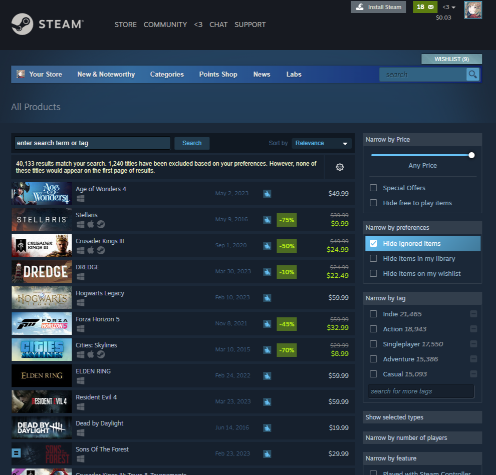

Steam uses Algorithms to give Users Lists of Games based on their related Searches and Games played. The gif is another example of how Steam Games are showcased on the main marketstore. Steam will do this based on popularity or Games you have played.
Steam also allows users to add their favorite or potential games they may purchace, onto their wishlist. The algorithm behind Steam's market also reads through the users wishlist to showcase newer games for users to buy.
